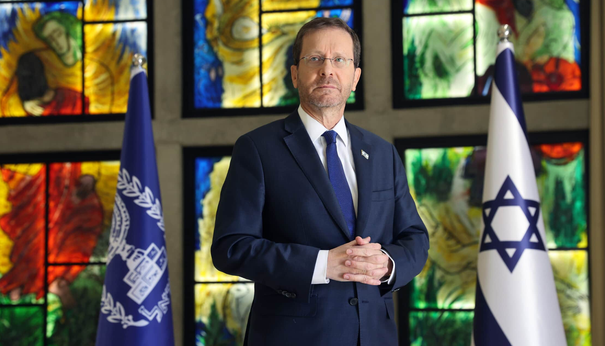

יצחק הרצוג
נשיא מדינת ישראל
נשיא המדינה - יצחק הרצוג
נשיא המדינה יצחק הרצוג הוא איש ציבור הפועל בשירות המדינה והחברה זה למעלה משני עשורים. נולד בשנת 1960 לאורה ולחיים הרצוג, לימים הנשיא השישי של מדינת ישראל. שירת כקצין בחיל המודיעין, ולאחר שסיים לימודי משפטים עבד כעורך-דין, והתמחה בתחומי התקשורת. הוא שימש כמזכיר הממשלה, כחבר בכנסות ישראל, כשר הבינוי והשיכון, שר התיירות, שר הרווחה והשירותים החברתיים וכשר לענייני תפוצות. בהמשך נבחר לעמוד בראש מפלגת העבודה וכיהן כיו”ר האופוזיציה. משך כשלוש שנים כיהן הרצוג כיו”ר הנהלת הסוכנות היהודית. ביולי 2021 נבחר על ידי הכנסת ברוב חסר תקדים והחל בכהונתו כנשיא המדינה ה-11.
יצחק הרצוג נולד ב-22 בספטמבר 1960, א’ בתשרי התשכ”א, בתל אביב, שם גדל והתחנך. בילדותו הוצמד לו הכינוי בוז’י אשר מלווה אותו לכל אורך חייו מני אז.הנשיא האחד-עשר הוא נצר למשפחה בעלת שורשים עמוקים ורבי משמעות בעשייה המדינית, החברתית והדתית של מדינת ישראל והעם היהודי, שתחילתם עוד שנים רבות לפני הקמת המדינה. הוא נושא את שמו של סבו הרב ד”ר יצחק אייזיק הלוי הרצוג זצ”ל שהיה הרב הראשי לארץ ישראל ובהמשך רבה הראשי הראשון של המדינה. קודם לכן שימש כרבה הראשי של יהדות אירלנד. סבתו, הרבנית שרה הרצוג, הייתה אשת חסד ומנהיגה חברתית ידועה, ממייסדות תנועת הנשים “אמונה”. על-שמה נקרא ביה”ח “הרצוג” בירושלים. בנם של הרב הרצוג ורעייתו, חיים, אביו של הנשיא יצחק הרצוג, שכיהן בשלל תפקידים ציבוריים, היה בין היתר אלוף בצה”ל שמילא את תפקיד ראש אגף המודיעין, שגריר ישראל באו”ם, ולימים - הנשיא השישי של מדינת ישראל, כהונה אותה מילא במשך עשור (1993-1983). אמו של הנשיא יצחק הרצוג, אורה לבית אמב”ש, הייתה היוזמת של חידון התנ”ך העולמי ומילאה מספר תפקידים ציבוריים ובהם מייסדת ונשיאת המועצה לישראל יפה. דודיו של הנשיא יצחק הרצוג הם הרב ד”ר יעקב הרצוג, מנכ”ל משרד ראש הממשלה בכהונתם של לוי אשכול וגולדה מאיר, וכן אבא אבן (אִישָׁהּ של סוזי, אחות אמו), שהיה שגריר בארה”ב ובאו”ם, שר החוץ של ישראל (1974-1966) וממניחי היסודות לשירות הדיפלומטי הישראלי. הרצוג הוא השלישי מבין ארבעת ילדיהם של אורה וחיים הרצוג. אחיו הם יואל, איש עסקים, מיכאל (מייק), ששירת כתא”ל בצה”ל וכיום מכהן כשגריר ישראל בארה”ב, ורונית, פסיכולוגית קלינית ומרצה. יצחק הרצוג למד בבית הספר “צהלה”, בבית ספר “מוריה”, ובחטיבת הביניים בבית הספר הממלכתי-דתי צייטלין (עירוני ב’-ג’), הוא המשיך ללימודיו התיכוניים בבית הספר התיכון ישיבת “רמז” שבמנהטן, ניו יורק, בעת שאביו כיהן כשגריר ישראל באומות המאוחדות. את שירותו הצבאי עשה הרצוג כקצין וכמפקד בעשרה בסיסים שונים של יחידה 8200 של חיל המודיעין. במהלך שירות המילואים התקדם עד לדרגת רב-סרן. הוא בוגר אוניברסיטת תל-אביב במשפטים, וכן למד באוניברסיטאות קורנל וניו יורק בארצות הברית. כעורך דין במקצועו, היה שותף בכיר במשרד עורכי הדין הרצוג, פוקס, נאמן ושות’. במסגרת פעילותו במשרד עורכי הדין, הקים הרצוג את מחלקת הטלקומוניקציה והתקשורת, שהייתה למובילה בתחומה בישראל, ועמד בראשה. עם תחילת כהונתו כחבר כנסת, בשנת 2003, פרש הרצוג מהמשרד. באוגוסט 1985 נישא הרצוג למיכל לבית אפק, בת למשפחה שורשית, מחקלאי עפולה וכפר יונה ואנשי גדוד העבודה. אביה אלוף משנה (מיל’) שאול מילא תפקידים בכירים בצה”ל, בהם מפקד מחוז חיפה ונספח צה”ל בברזיל, ואמה צביה הייתה אשת חינוך בעלת שם. מיכל, עורכת דין ומגשרת במקצועה שעסקה בתחום המשפטי כעשור, מילאה לאחר מכן שורת תפקידים התנדבותיים בכירים ורבי השפעה במגזר החברתי והפילנתרופי. לבני הזוג הרצוג נולדו שלושה בנים: נועם, מתן ורועי. בין השנים 1988–1990 היה מזכיר “המועצה הכלכלית החברתית”, שבה חברים נציגי הממשלה, ההסתדרות והמעסיקים. במשך שלוש שנים, שתחילתן בשנת 2000, עמד הרצוג בראש הרשות הלאומית למלחמה בסמים. את דרכו הפוליטית עשה הרצוג בשורות מפלגת העבודה, תחילה כיועצם של ראשי המפלגה יצחק רבין ושמעון פרס. ביולי 1999 מונה הרצוג למזכיר הממשלה, תחת ראש הממשלה אהוד ברק, כהונה שאותה מילא עד למרס 2001. לקראת הבחירות לכנסת השש-עשרה, שהתקיימו בתחילת שנת 2003, נבחר הרצוג למקום ה-11 ברשימת מפלגת העבודה ונכנס מטעמה לכנסת. בכהונה זו ריכז בין היתר שדולות שונות ואת עבודת האופוזיציה בוועדת הכספים של הכנסת. בשלהי 2004 נבחר הרצוג לכהונת שר בממשלה, ובינואר 2005 הושבע כשר הבינוי והשיכון. במסגרת כהונתו זאת, קידם את תחומי שיקום השכונות, סייע לחברה הערבית, הרחיב את היצע הדירות לנזקקים, והביא לסיום משבר מחוסרי הדיור בנגב. כשר השיכון יזם הרצוג תכנית שנועדה לאפשר ולעודד את דיירי הדיור הציבורי באזורי עדיפות לאומית לרכוש את דירותיהם. לאחר ביצוע “חוק יישום תכנית ההתנתקות”, עסק גם בטיפול באנשי גוש-קטיף וצפון השומרון שנעקרו מבתיהם. במאי 2006 הושבע הרצוג כשר התיירות. בתקופת מלחמת לבנון השנייה ואחריה כיהן גם כחבר הקבינט המדיני-ביטחוני, והיה מדובריה הבולטים של מדינת ישראל בתקשורת העולמית. במסגרת תפקידו כשר, פעל לאחר המלחמה לשיקום ענף התיירות בצפון ישראל ובכלל, לאחר שספג נזקים כבדים. במקביל קידם את התיירות העולמית לישראל ביוזמות חדשניות, פעל לשיפור השירות בענף התיירות, וקידם פרויקטים תיירותיים בכלל המגזרים והקהילות בישראל. מכל תפקידיו בממשלת ישראל, מחשיב הנשיא הרצוג את כהונתו כשר הרווחה והשירותים החברתיים, אשר החלה במרס 2007, ונמשכה ארבע שנים, למשמעותית והחשובה ביותר. כשר הרווחה והשירותים החברתיים עסק הרצוג במגוון תחומים חברתיים, ובהם גיבוש תכנית הסיוע לניצולי השואה, שילובם בחברה של אנשים עם מוגבלויות, קידום מעמדם של העובדים הסוציאליים, הובלת תכנית לאומית לטיפול בילדים ובני-נוער בסיכון ובמצוקה, טיפול בקשישים, במודרים ובעניים בחברה ומאבק למען מיגור העוני. כמו כן, גיבש תכנית “חיסכון לכל ילד”, שיושמה לבסוף, והביא למתן הנחה בתרופות ושדרוג מערך הסיעוד לכלל הקשישים בישראל. הרצוג יזם חקיקה שאפשרה לאנשים עם מוגבלות לצאת לעבודה מבלי שתישלל קצבת הנכות שלהם, והגדיל את הסיוע התקציבי הממשלתי לארגונים החברתיים. במקביל לכהונתו במשרד הרווחה והשירותים החברתיים, כיהן הרצוג כשר לענייני תפוצות, חברה ומאבק באנטישמיות, נושא שקרוב לליבו כל חייו. בנובמבר 2013 נבחר לראשות מפלגת העבודה, ובהמשך היה לראש האופוזיציה בכנסת התשע-עשרה ובהמשך גם בכנסת העשרים. לקראת הבחירות לכנסת העשרים, הכריז הרצוג על כוונתו להתמודד על ראשות הממשלה. הרשימה שגיבש במשותף עם יושבת ראש “התנועה” ושרת החוץ לשעבר, ציפי לבני, זכתה בבחירות ל-24 מנדטים, הישג שכמותו לא ידעה מפלגת העבודה מאז כהונתו של יצחק רבין. ביוני 2018 בחר חבר הנאמנים של הסוכנות היהודית פה אחד ביצחק הרצוג כיושב ראש הסוכנות היהודית, וכך, למשך כשלוש שנים, עמד הרצוג בראש הארגון היהודי הגדול ביותר בעולם, (שכזכור היה “הממשלה שבדרך” בשלבי הקמתה של מדינת ישראל). במהלך כהונתו העלתה הסוכנות היהודית ארצה 85 אלף עולים מ-90 מדינות, אלפים מהם בשיאו של משבר הקורונה ורבים אחרים במבצעי הצלה שונים. הסוכנות בהובלתו עסקה רבות בסוגיית ביטחונן של הקהילות היהודיות על רקע העלייה המדאיגה באנטישמיות, ובבניית החוסן של קהילות ברחבי העולם היהודי ובישראל בעקבות נזקי הקורונה. כהונתו הוקדשה לביסוס הגשרים האסטרטגיים בין ישראל לבין יהדות התפוצות, תוך הדגשה של חיזוק זהות יהודית וציונית ועידוד חשיפה חיובית ומעמיקה של יהדות התפוצות לגווני הפסיפס החברתי הישראלי. הרצוג הוציא לאור שני ספרים העוסקים בנושאים של כלכלה, רווחה וחברה בישראל, וכן מאות מאמרים, הרצאות, סקירות וטורי דעה בתחומים שונים שהתפרסמו בכל רחבי תבל. במאי 2021 הציג הרצוג את מועמדותו לתפקיד נשיא מדינת ישראל ה-11. בבחירות שהתקיימו ב-2 ביוני 2021 זכה לתמיכת 87 קולות חברי הכנסת ובכך קבע היסטוריה והיה לנשיא שזכה לתמיכה הגדולה ביותר אי פעם בהיבחרו לנשיאות. הרצוג הצהיר אמונים כנשיא ונכנס לתפקידו ב-7 ביולי 2021. בנאום ההשבעה שלו בכנסת ישראל, שטח הנשיא הרצוג את חזונו והדגיש, בין היתר, את המחויבות לפעול לאיחוי השסעים המאיימים על עתידה של החברה והמדינה, באומרו: “זו האחריות שלנו - זו משימת דורנו במדינת ישראל. זו שליחותי, משימת כהונתי, לעשות הכול כדי לבנות את התקווה מחדש”.
בריאות הנפש
מתוך דברי נשיא המדינה בוועידת אשמורת השנייה – ב’ בשבט ה’תשפ”ג, 24.1.23 לפני יותר משנה התחלתי לכהן כנשיא מדינת ישראל, ויצאתי למסע גיאוגרפי, אנושי וחברתי, לאורכה ולרוחבה של ישראל. במסע המרגש והבלתי פוסק, מיכל ואני פוגשים מדי יום את בנותיה ובניה של הארץ היפה. לכל אורך המסע - עומדת לנגד עיניי נקודת זמן אחת: שנת 2028, התשפ”ח – שנת השמונים למדינת ישראל – שנת הגבורות למדינתנו. המסע הזה גורם לי להתרוממות נפש, וגאווה - בנו, ובמה שהשגנו כחברה וכמדינה, ובאותה נשימה, ובכאב לב, אני רואה לנגד עיניי את השסעים והקרעים שבתוכנו, שהולכים ומעמיקים, ולא יכול שלא להיזכר בכך שפעמיים בהיסטוריה - בימי ממלכות בית דוד והחשמונאים - קמה מדינה יהודית בארץ ישראל; ופעמיים היא קרסה לפני שהגיעה לשנת השמונים שלה. הרשו לי להדגיש בתוקף: אינני נביא זעם וחורבן. לא הייתי ולא אהיה.מכבדת – שאנו זקוקים לה היום כאוויר לנשימה.
צילןם: חיים צח לע״מ
למעלה מעשרת אלפים מקרי אלימות אירעו כלפי צוותים רפואיים בארבע השנים האחרונות, ולמעלה מ-3000 תיקים נפתחו על אלימות בכבישים בשנת 2022 בלבד! אנו, שהתגאינו תמיד בלכידות שלנו, הפכנו למקום בו אזרחים מפחדים שיהיו קורבן להתפרצות אלימה במרחב הציבורי. הקושי שלנו – הבוגרים - לנהל מחלוקת, משפיע ישירות על ילדינו, כשאלפי תיקים נפתחו בשנה האחרונה על מקרי אלימות בבתי הספר. עליה של קרוב לארבעים אחוזים! מה עוד צריכים להראות לנו הנתונים כדי שנתעשת? העם בישראל ידע לאורך השנים להתגבר על אתגרים קשים מנשוא. העם הזה שכואב ודואג בימים אלו, לא איבד תקווה. השאיפה של רובנו עודנה, לחיות בחברה ישראלית חסונה וסולידרית. שבעים ושניים אחוזים מהציבור מעידים שחשוב להם שישראל תהיה מלוכדת יותר; ושיעור הישראלים שמודאגים מהקיטוב הפנימי גבוה פי שלושה מאלה שמודאגים מהאיומים הביטחוניים החיצוניים. המסקנה ברורה: עלינו לקחת אחריות! עלינו לזכור את הגבול בין מחלוקת לשנאה. עלינו לזכור שאנו חולקים מולדת, חולקים בית. שחיינו, גורלנו ועתיד ילדנו שזורים יחד זה בזה. מדינת ישראל צריכה ויכולה להגיע אל שנת ה-80 – אל גיל הגבורות – כשהיא מלוכדת יותר ומפולגת פחות, כשהיא, כשאנו, עוסקים בלי פחד במחלוקות שבתוכנו, כך שיצמיחו ויבנו אותנו. ההבנה העמוקה של ערכה העצום של מחלוקת לשם שמים, זקוקים לה היום כאוויר לנשימה.